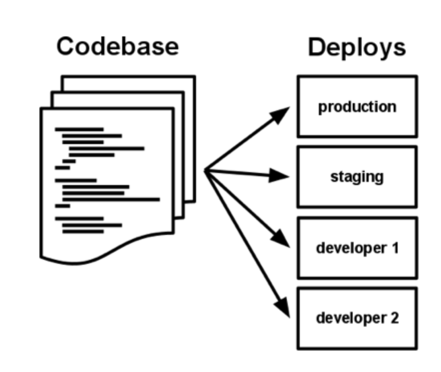

I. Codebase
One codebase tracked in revision control, many deploys
A twelve-factor app is always tracked in a version control system, such as Git, Mercurial, or Subversion. A copy of the revision tracking database is known as a code repository, often shortened to code repo or just repo.
A codebase is any single repo (in a centralized revision control system like Subversion), or any set of repos who share a root commit (in a decentralized revision control system like Git).

There is always a one-to-one correlation between the codebase and the app:
- If there are multiple codebases, it’s not an app – it’s a distributed system. Each component in a distributed system is an app, and each can individually comply with twelve-factor.
- Multiple apps sharing the same code is a violation of twelve-factor. The solution here is to factor shared code into libraries which can be included through the dependency manager.
There is only one codebase per app, but there will be many deploys of the app. A deploy is a running instance of the app. This is typically a production site, and one or more staging sites. Additionally, every developer has a copy of the app running in their local development environment, each of which also qualifies as a deploy.
The codebase is the same across all deploys, although different versions may be active in each deploy. For example, a developer has some commits not yet deployed to staging; staging has some commits not yet deployed to production. But they all share the same codebase, thus making them identifiable as different deploys of the same app.